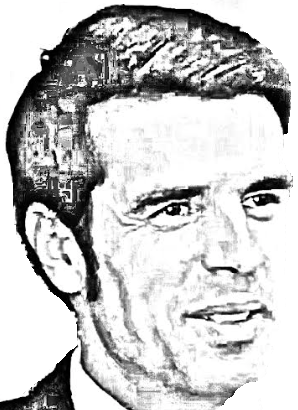

25
Domingo
One Toro
(18:30)
Palacio Vistalegre (Madrid)
Novillada sin picadores
Certamen KM 0
Novillos de
Flor de Jara
Procedencia
Conde de Santa Coloma de
D. Joaquín Buendía Peña
Novillos de
Jesús González
6 finalistas
del certamen
Unicable
(23:30)
Insurgentes
Ciudad de México
Toros de
Pozohondo
Procedencia
Torrecilla
José Mauricio
Emilio de Justo
Diego San Román
 One ToroOne Toro
One ToroOne Toro Palacio Vistalegre (Madrid)
Palacio Vistalegre (Madrid) Novillos de
Novillos de 
 UnicableInsurgentes
UnicableInsurgentes Toros de
Toros de  Diego San Román
Diego San Román